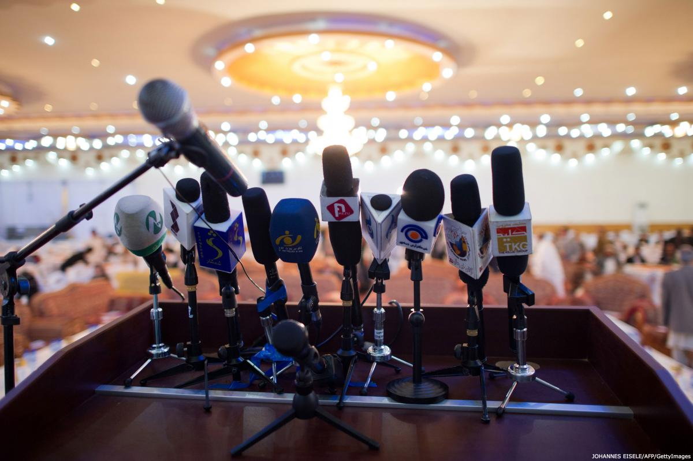

آییننامه رفتاری رسانهها و انتخابات
به طور کلی روزنامهنگاران و رسانهها، در اکثر کشورها و نیز اغلب موسسات بینالمللی، آییننامههای انضباطی یا استانداردهای اخلاقی و حرفهای خاصی را پذیرفتهاند. به علاوه، آییننامههای انضباطی حاکم بر رفتار احزاب سیاسی و کاندیداها در انتخابات، خواه به طور اختیاری یا از طریق وضع قوانین، در شمار فزایندهای از کشورها به مرحله قبول رسیدهاند. رفتار مقامات انتخاباتی نیز تابع استانداردهای محکم حرفهای هستند.

برای در دست داشتن استانداردها و معیارهای جهانی برای همه روزنامهنگاران در همه جای دنیا، موسسه بینالمللی دموکراسی و حمایت انتخاباتی آییننامهای برای رفتار رسانهها در حوزه انتخابات تنظیم کرده است.
هدف این آییننامه پرداختن به موضوعاتی است که در محل تلاقی مجموع سه استاندارد اخلاقی قرار میگیرند. این امر بیش از پیش مورد پذیرش قرار میگیرد که رسانههای جمعی نقش خطیری در انتخابات آزاد و دموکراتیک ایفا میکنند. رسانههای جمعی به منظور انتقال اطلاعات به رایدهندگان برای انتخابی آزاد و آگاهانه ضروری هستند. آنها به طور خاص این کار را از سه طریق به انجام میرسانند:
- با انتقال پیامهای سیاسی احزاب و کاندیداها؛
- با اعلام اطلاعات مهم انتخاباتی از جانب مسؤولان انتخاباتی؛
- با قراردادن کل روند انتخابات تحت نظارت و نگاه مستقل افراد.
نقش مهم رسانههای جمعی وظایف اخلاقی به خصوصی را بر عهدهی روزنامهنگاران، ویراستاران و صاحبان رسانهها، احزاب سیاسی و کاندیداها و نیز مقامات انتخاباتی میگذارد. توصیه میشود آییننامهی مشترکی از سوی همهی افراد ذیربط پذیرفته شود تا تضمین کند که همه رفتاری اخلاقی دارند و به حقوق و آزادیهای یکدیگر احترام میگذارند.
آییننامه پیش رو در چهار بخش تنظیم شده و تکالیف مختلف مربوط به روزنامهنگاران، سردبیران و صاحبان رسانهها، احزاب سیاسی و کاندیداها و نهادهای مدیریت انتخابات را در بر میگیرد.
برخی موضوعات مستقیما در این آییننامه مورد اشاره قرار نگرفتهاند. به طور خاص، این مسئله که چه سیستمی برای دسترسی مستقیم احزاب سیاسی به رسانهها وضع شده احتمالا در سطح ملی در قوانین، مقررات و یا توافقات میان اشخاص ذیربط مورد بحث قرار گرفته است.
روزنامهنگاران
- نخستین وظیفه یک روزنامهنگار گزارش صحیح و به دور از جانبداری است.
- یک روزنامهنگار باید تنها بر اساس حقایقی که خود منبع آن را میشناسد گزارش کند. یک روزنامهنگار نباید مانع انتشار اطلاعات اساسی شود.
- یک روزنامهنگار باید اصل مخفی نگهداشتن منبع خبر در صورت اعتماد خبردهنده را رعایت کند.
- یک روزنامهنگار باید گزارشی متوازن تنظیم کند. اگر کاندیدایی اتهامی به کاندیدای دیگر وارد کرد، روزنامهنگار باید در صورت امکان نظر هر دو طرف جریان را بگنجاند.
- یک روزنامهنگار باید همه سعی خود را به کار گیرد تا در صورتی که اطلاعات انتشاریافته به شکل زیانباری نادرست بوده است، آن گزارش به سرعت تصحیح شود.
- یک روزنامهنگار، تا جایی که ممکن است، باید نظرات کاندیداها و احزاب سیاسی را مستقیما از زبان خود آنها نقل کند، نه به شکلی که دیگران آن را شرح میدهند.
- یک روزنامهنگار نباید از زبان یا بیان احساساتی استفاده کند که به دلایل نژادی، جنسیتی، تمایلات جنسی، زبانی، دینی، سیاسی یا دیگر عقاید و یا به علت مسائل اجتماعی و ملی اعمال تبعیض یا خشونت را افزایش میدهند.
- یک روزنامهنگار باید در صورت گزارش نظرات کسانی که از تبعیض یا خشونت حمایت میکنند تمام سعی خود را به کار گیرد تا زمینه و فضای چنین نظراتی را به وضوح نشان دهد و نظر کسانی را که این احساسات علیه آنها برانگیخته شده نیز در گزارش بگنجاند.
- یک روزنامهنگار نباید پاداشی از یک سیاستمدار یا کاندیدا قبول کند.
- یک روزنامهنگار نباید در مورد محتوای گزارش خبری به یک سیاستمدار وعدهای بدهد.
- یک روزنامهنگار باید در انتشار نتایج نظرسنجیهای عمومی بااحتیاط عمل کند. در صورت امکان هر گزارش باید حاوی موارد زیر باشد:
- چه کسی و در چه زمانی این نظرسنجی را انجام داده است.
- چه تعدادی، در کجا و به چه طریق مورد مصاحبه قرار گرفتهاند، و چه درصد خطایی در این نظرسنجی وجود دارد.
- واژگان به کار رفته در سوالات دقیقا چه بوده است.
- یک روزنامهنگار باید موارد زیر را تخلفات حرفهای سنگینی به شمار آورد:
- سرقت ادبی
- قلب واقعیت از روی بدخواهی
- بهتان، تهمت، افترا یا اتهام بیپایه
- گرفتن رشوه به هر شکل در عوض انتشار یا جلوگیری از انتشار خبر
موسسات رسانهای
- در هر رسانهای باید تفکیک روشنی میان نظر و خبر وجود داشته باشد. در اعلام خبر باید حقایق به گونهای که خبرنگار صادقانه فهمیده بازگو شود. تفسیر خبر البته میتواند خط مشی انتشاردهنده را نشان دهد.
- رسانههای تحت مالکیت عمومی نباید مبلّغ نظراتی له یا علیه هیچ حزب یا کاندیدا باشند.
- رسانههای تحت مالکیت عمومی وظیفه دارند در گزارشهای انتخاباتی متوازن و بیطرفانه رفتار کنند و نباید در اعطای فرصت پخش نسبت به هیچ حزبی تبعیض قائل شوند.
- اگر رسانهها حاضر به پخش تبلیغات سیاسی در ازای دریافت پول هستند، باید مطابق اصل عدم تبعیض و با نرخی برابر برای همه این کار را انجام دهند.
- اخبار، مصاحبهها، اطلاعات و برنامههای متداول یا مقالات منتشره در رسانههای عمومی نباید به شکل جانبدارانه له یا علیه هیچ حزب یا گروهی تنظیم شوند.
- رسانهها باید پوشش خبری یکسان و منظمی برای احزاب سیاسی، کاندیداها و برنامههایشان فراهم کنند.
- رسانهها باید این امکان را فراهم کنند و مشوق این امر باشند تا رایدهندگان دیدگاهها و نظراتشان را بیان کنند.
- رسانهها باید مبلغ ارزشهای دموکراتیک از قبیل حاکمیت قانون، پاسخگویی و حکمرانی شایسته باشند.
- هر کاندیدا یا حزبی که به واسطهی پخش یا انتشار مطلبی بر طبق عرف مدعی هتک حرمت یا مدعی ایراد لطمه به هر طریق باشد باید فرصت پاسخگویی به او داده شود یا از امکان انتشار اصلاحیه یا تکذیبیه توسط پخشکننده یا ناشر یا شخصی که عبارت توهینآمیز را بیان کرده برخوردار شود. جوابیه یا اصلاحیه باید در اسرع وقت پخش یا منتشر گردد.
- پوشش کنفرانسهای خبری و سخنرانیهای عمومی در مورد مباحث بحثبرانگیز سیاسی (بر خلاف مسائل مربوط به تکالیف دولت) که از سوی رییس دولت، وزرا یا نمایندگان مجلس برگزار میشوند باید تابع حق پاسخگویی یا اصل زمان برابر باشند. این وظیفه هنگامی که شخص بیانکنندهی اظهاراتْ خود وارد انتخابات شده باشد از ضرورت بیشتری برخوردار خواهد بود.
- رسانههای تحت مالکیت عمومی باید محتوای آموزشی مناسبی برای آموزش رایدهندگان پخش یا منتشر کنند.
- محتوای آموزشی رایدهندگان باید صحیح و بیطرفانه باشد و باید به شکلی موثر رایدهندگان را در مورد روند رایگیری من جمله چگونگی، زمان و مکان اخذ رای، نامنویسی برای رایدادن و تشخیص صحت ثبت، اصل مخفیبودن برگه رای (و مصونیت از اقدام تلافیجویانه)، اهمیت رایدادن، نقش مقامهایی که موضوع رایگیری هستند و موضوعات مشابه مطلع گرداند.
- آموزش رایدهندگان باید شامل برنامههایی به زبان اقلیتها و برنامههایی برای گروههایی باشد که به طور سنتی از جریان سیاسی کنار گذاشته شدهاند از قبیل زنان و افراد دارای معلولیت.
- موسسات رسانهای باید بر خروجی خود نظارت داشته باشند تا اطمینان حاصل کنند که خروجیها مطابق معیارهایی است که در این آییننامه تدوین شدهاند.
احزاب سیاسی
- همه احزاب سیاسی و کاندیداها باید به آزادی رسانهها احترام بگذارند.
- احزاب سیاسی و کاندیداها نباید موجب آزار یا کارشکنی در فعالیت خبرنگارانی شوند که در حال انجام وظایف حرفهایشان هستند.
- احزاب سیاسی و کاندیداهای صاحب قدرت نباید از مقام خود سوءاستفاده کنند تا در دسترسی به رسانهها امتیازی نامنصفانه بگیرند. همه رسانهها مصداق این شرط هستند، اما این شرط در صورتی که رسانهی برخوردار از منابع عمومی تحت مدیریت مستقیم دولت باشد دارای اهمیت ویژهای خواهد بود.
- احزاب سیاسی و کاندیداها نباید به خبرنگاران و موسسات رسانهای پاداش یا رشوه دهند تا آنها را به حضور در نشستهای انتخاباتی یا تهیه گزارشهایی به حمایت از ایشان یا در مخالفت با احزاب یا کاندیداهای مخالف ترغیب کنند.
- احزاب سیاسی و کاندیداها نباید مواضع اعلامشده یا اطلاعات مربوط به احزاب و کاندیداهای دیگر را قلب یا جعل کنند.
- احزاب سیاسی و کاندیداها باید از به کار بردن زبانی فتنهجویانه، توهینآمیز یا تهدیدگر و برانگیزنده خشونت علیه شخص یا گروهی دیگر دوری کنند.
- رهبری هر حزب باید اطمینان حاصل کند که اصول بردباری و بحث آزاد که در این آییننامه مقرر شده به کلیه فعالان انتخاباتی حزب اعلام و به تفصیل شرح داده شدهاند. احزاب باید مسئولیت کامل اعمال و گفتههای کسانی را که از سوی آنان مشغول به فعالیت هستند بر عهده بگیرند.
نهادهای مدیریت انتخابات
- نهادهای مدیریت انتخابات باید به آزادی رسانهها من جمله استقلال خط مشی و حق بیان سلایق سیاسی رسانه احترام بگذارند.
- نهادهای مدیریت انتخابات باید به آزادی بیان احزاب و کاندیداها احترام بگذارند.
- نهادهای مدیریت انتخابات باید انتخابات را به شیوهای باز و شفاف برگزار کنند.
- نهادهای مدیریت انتخابات باید تلاش کنند و اطمینان یابند که فعالیتهای ایشان تا بیشترین حد ممکن پذیرای نظارت رسانهها است.
- نهادهای مدیریت انتخابات نباید هیچ رسانهای را در توزیع یا پخش مطالب تبلیغاتی یا اقلام رایگان اطلاعرسانی بر دیگران ترجیح دهند.
- نهادهای مدیریت انتخابات باید از رسانههای جمعی و دیگر طرق ارتباطی استفاده کنند تا اطلاعاتی صحیح و به موقع در اختیار رایدهندگان قرار دهند و ایشان را قادر سازند تا از حق رای خود به طور آگاهانه استفاده کنند.
- نهادهای مدیریت انتخابات تنها باید آن محدودیتی را بر خبررسانی اعمال کنند – مثلا در حوزههای اخذ رای یا در حین شمارش آراء – که قطعا به منظور تضمین درستی و صحت روند انتخابات ضروری باشد.
منبع: موسسه بینالمللی دموکراسی و حمایت انتخاباتی ( IDEA)